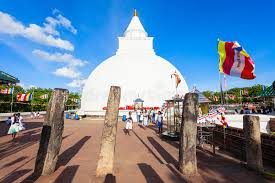
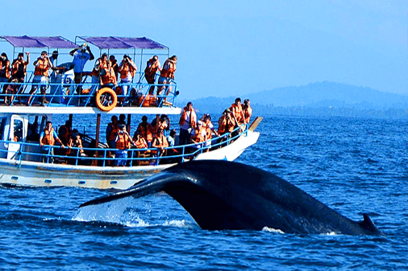
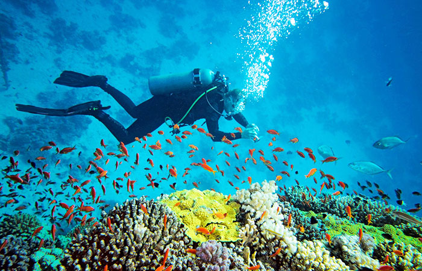
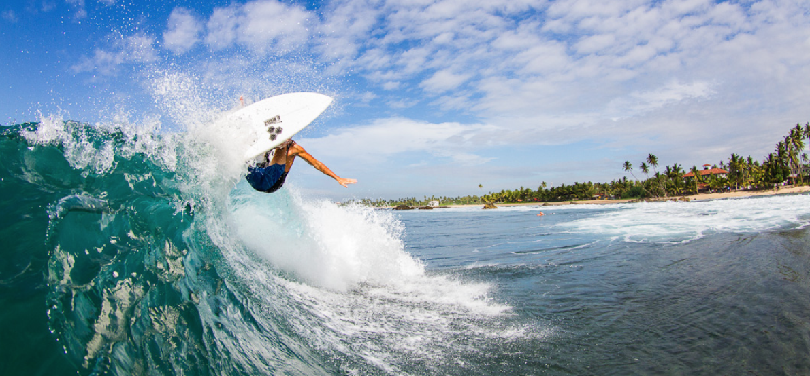
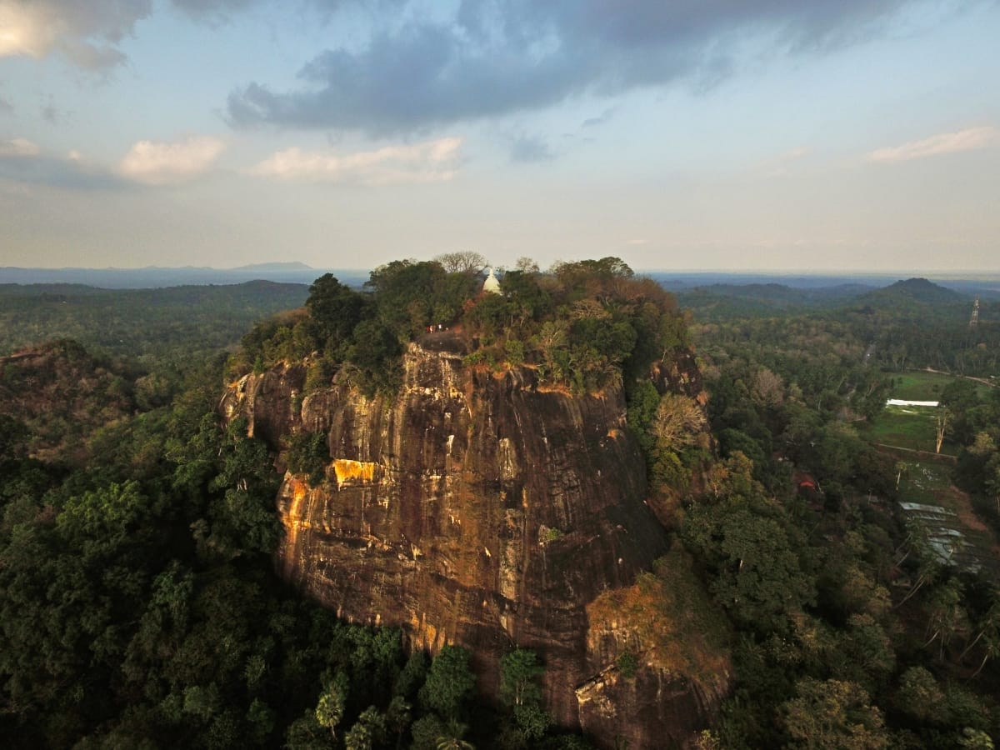
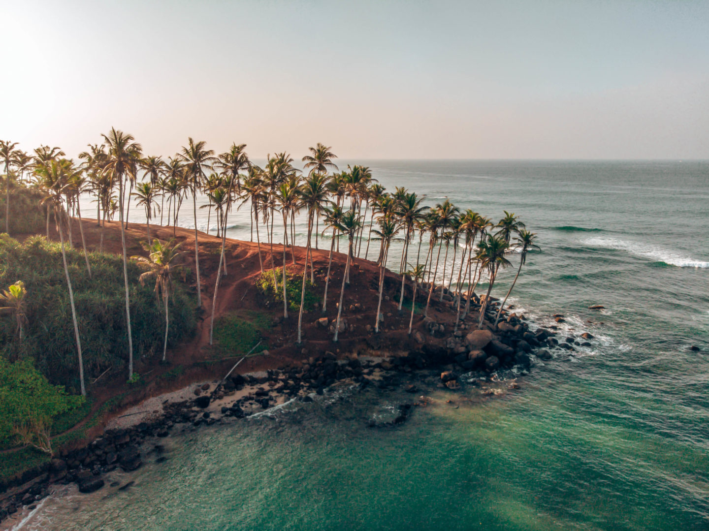
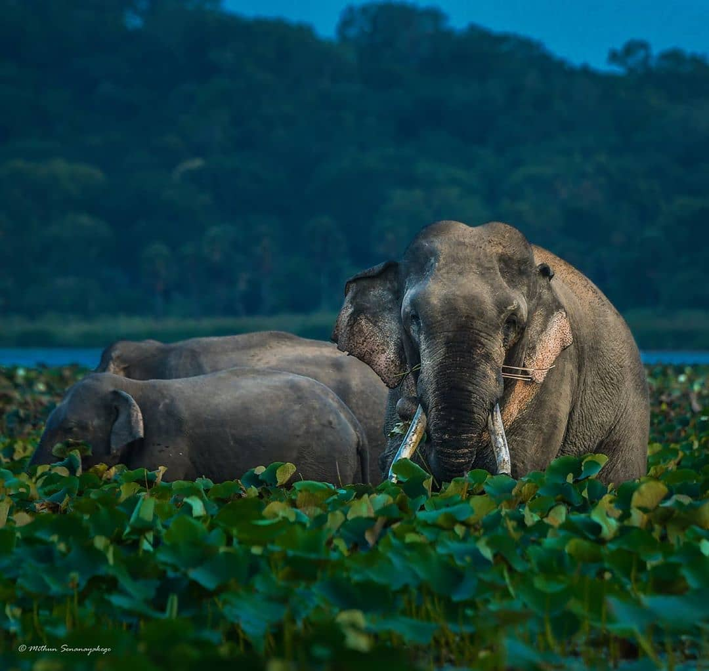

South Coast
 Go on a Wild Life Safari and explore a beautiful combination of a national park and reservation where leopards, peacocks, elephants,
crocodiles, sloth bears, spotted dear, jackals, sambars and other exotic birds call home. The best season to visit is between February and July.
Taru Villas – Yala makes for the perfect base to explore the Yala National Park, as well as Udawalawe and Bundala National Parks as well.
Go on a Wild Life Safari and explore a beautiful combination of a national park and reservation where leopards, peacocks, elephants,
crocodiles, sloth bears, spotted dear, jackals, sambars and other exotic birds call home. The best season to visit is between February and July.
Taru Villas – Yala makes for the perfect base to explore the Yala National Park, as well as Udawalawe and Bundala National Parks as well.

Kataragama is one of the holiest sites on the island most sacred to Buddhists and Hindus alike;
pilgrims come here all year round to worship at the shrine of the god Kataragama. The temples come alive in
the evenings when religious rituals take place as devotees arrive with trays of offerings to the god and where you’ll hear the
sound of conch shells being

Mirissa is one of the perfect spots to sight the largest mammal on earth. Whale and dolphin watching has become one of the best things
to do in the south and you will find a number of operators around this area offering trips to the Indian Ocean for dolphins, whales, and turtles
spotting. The best time to visit is from December to March.

Whether you’re a novice or expert diver, you will find some incredible diving locations in Hikkaduwa.
There are few PADI dive schools and excursion operators to choose from and they can train adventurers as young as 8 years old.
Enjoy free diving, swimming with large sea turtles or choose any of ten shipwrecks to explore at various depths.

Despite the many surf spots around the island, Weligama Beach is perfect for surfing beginners. It is quieter, more relaxed and ideal for
family beach time.

Mulkirigala Raja Maha Vihara is an ancient Buddhist temple in Mulkirigala, Sri Lanka. It has been built on a 205 m high natural rock,
surrounded with another four rocks known as Benagala, Kondagala, Bisogala and Seelawathiegala.

Having made its way to almost every traveller’s Instagram profile when they visit Mirissa, the Coconut Tree Hill is a must-do when you’re in Mirissa.
The Coconut Tree Hill is a private coconut estate with a nearby temple set on a high cliff overlooking the glistening waters of the Indian Ocean and the untouched
stretch of golden beach. Located in proximity to the town, the hill can be accessed throughout the day or night; at no cost.

Explore the elephants, leopards and other exotic birds and reptiles found in this National Park initially created to provide a sanctuary for wild animals
displaced by the construction of the Udawalawe Reservoir. This park does not have a best time to visit as animals at Udawalawe can be spotted at anytime of the year,
including leopards. The park has the biggest concentration of Asian elephants in Sri Lanka, so the probabilities of you seeing them are very high.
|